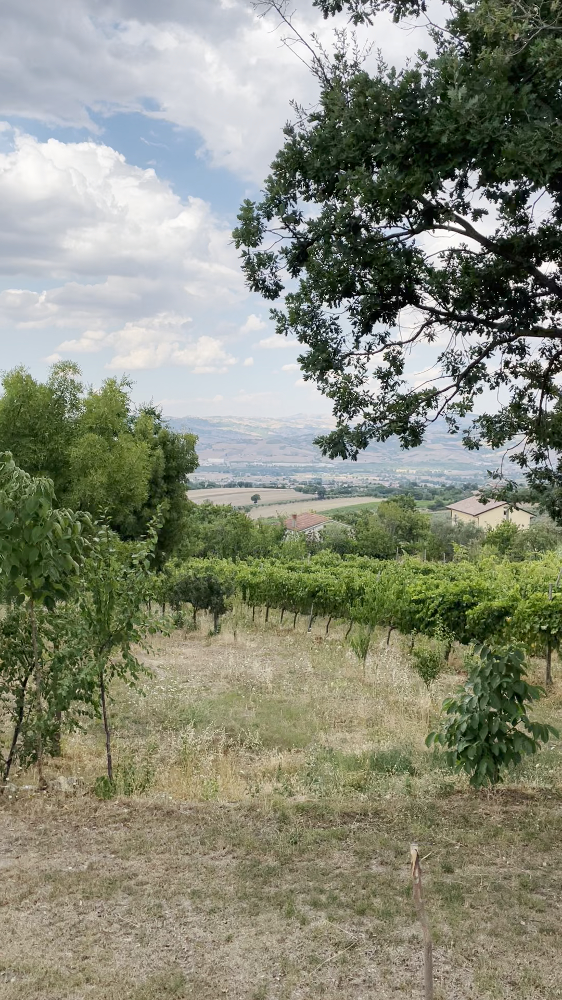
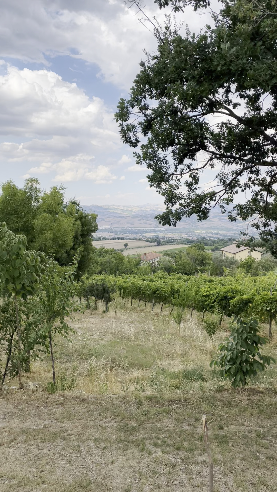
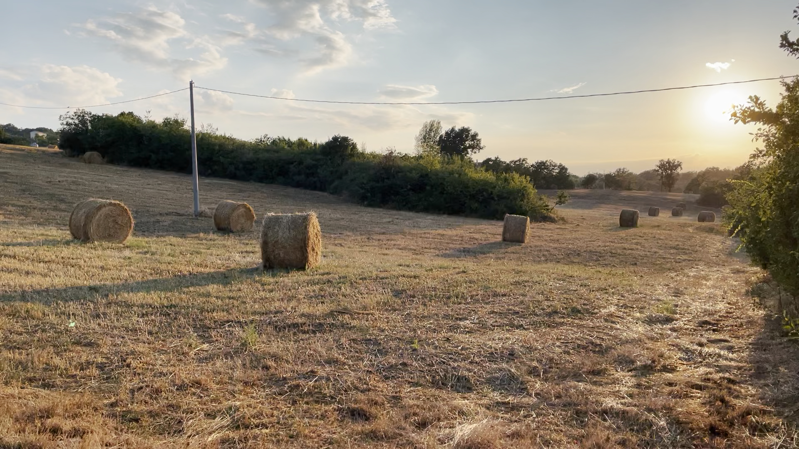
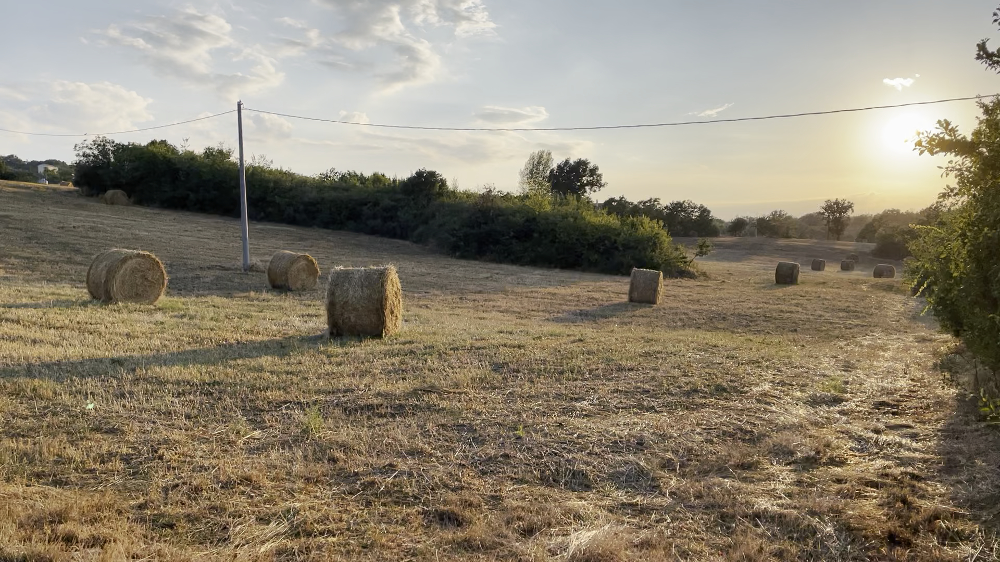
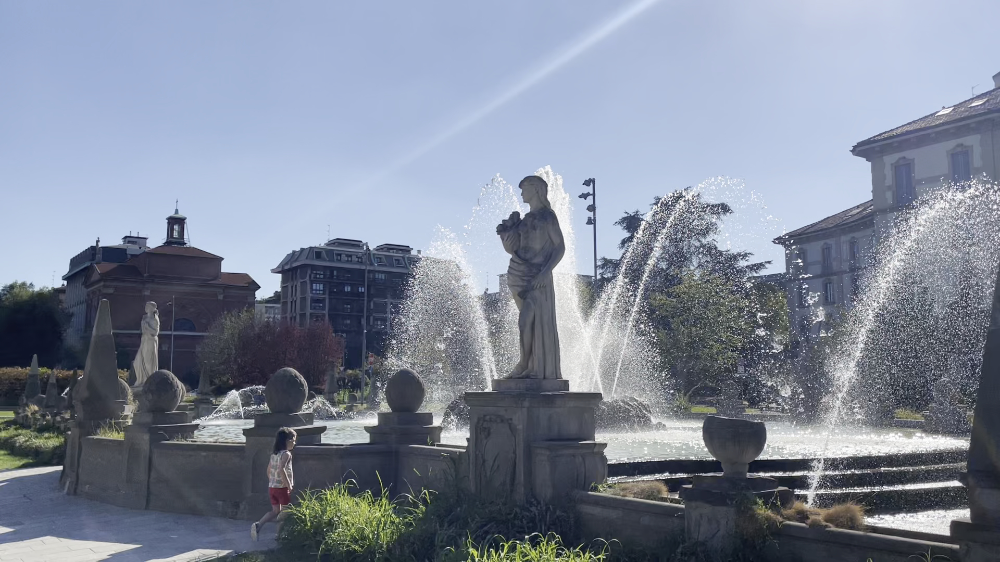
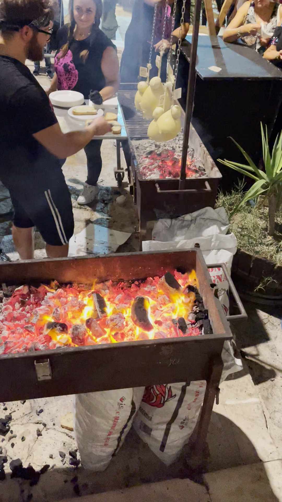

This is a copy-paste of this site.
Click each image to toggle between JPEG and AVIF.
You can toggle between the 10-bit Rec2020 AVIF and the 8-bit Rec2020 JPEG version of the image by clicking
on the image. Pinch-zoom while doing this to examine detail.
Select the versions to include in this cycle (note P3 is lower quality due to conversions).
You can swap between the versions by tapping the buttons below
the image. You can also change the background color of this page:
Page background color:
Pescariello 0
Currently showing: pescariello0-hlg.avif
Tap/click on one of the images below to replace the main image

jpeg, P3

jpeg, Rec2020
avif, Rec2020, 10 bit
Pescariello 1
Currently showing: pescariello1-hlg.avif
Tap/click on one of the images below to replace the main image

jpeg, P3

jpeg, Rec2020
avif, Rec2020, 10 bit
City Life
Currently showing: citylife-hlg.avif
Tap/click on one of the images below to replace the main image
jpeg, P3

jpeg, Rec2020
avif, Rec2020, 10 bit
Caciocavallo
Currently showing: caciocavallo-hlg.avif
Tap/click on one of the images below to replace the main image

jpeg, P3
jpeg, Rec2020
avif, Rec2020, 10 bit
Nizza
Currently showing: nizza-hlg.avif
Tap/click on one of the images below to replace the main image